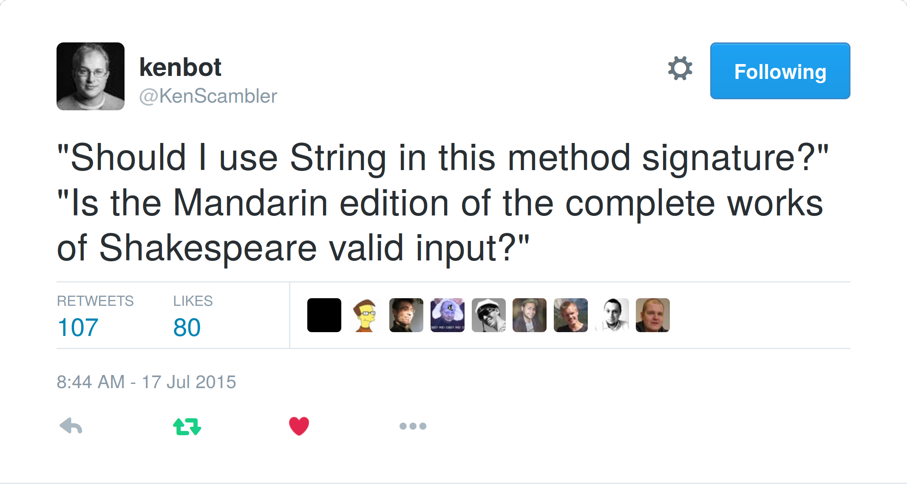

class: center, middle # Refinement Types in Scala mit [refined](https://github.com/fthomas/refined) ## Frank S. Thomas --- # Dieser Vortrag wurde von [tut](https://github.com/tpolecat/tut) maschinell geprüft ```scala import eu.timepit.refined.W import eu.timepit.refined.api.{ Refined, RefType } import eu.timepit.refined.auto._ import eu.timepit.refined.boolean.{ And, Or } import eu.timepit.refined.char.Digit import eu.timepit.refined.collection.{ Forall, Size } import eu.timepit.refined.generic.{ Eval } import eu.timepit.refined.numeric.{ Greater, Interval, Positive } import eu.timepit.refined.string.{ MatchesRegex, Regex } import scala.sys.process._ ``` --- class: center, middle  https://twitter.com/KenScambler/status/621933432365432832 ??? * Viele unserer Datentypen umfassen mehr Werte als in unserer Domäne sinnvoll ist * Das ist ein Problem, weil Typen auch Dokumentation sind (Object < Long < AuftragsId < TechnischeAuftrasgId) * Man kann sich auf Invarianten verlassen anstatt auf sie zu hoffen * Möglichen Fehlerzustände schrumpfen oder verschwinden * Der Compiler soll helfen mehr Fehler zu vermeiden --- # Welche Datentypen verwenden wir? * Primitive Typen: `Int`, `Double`, `Boolean`, etc * Typen aus der Standardbibliothek: `String`, `List[T]`, `Date` * Eigene Typen: * `class P(a: A, b: B, c: C, ...)` * `abstract class S; class S1 extends S; class S2 extends S; ...` ??? * Primite Typen und `String` sind bequem weil es für diese Literale gibt * Wie erzeuge ich einen Datentyp der die natürlichen Zahlen von 1 bis 10 (100) repräsentiert? `Int`, `Short`, `Byte` oder Summentyp, bei dem alle Werte aufgezählt werden? * Warum Long für einen Datentyp, wenn Werte nie negativ sein können. Der Compiler hilft hier nicht. Wenn wir defensiv programmieren, müsste wir immer damit rechnen. --- # Datentyp für die Zahlen von 1 bis 8 * Eigener Datentyp: ```scala abstract class N; class N1 extends N; class N2 extends N; class N3 extends N; class N4 extends N; class N5 extends N; class N6 extends N; class N7 extends N; class N8 extends N; ``` ```scala scala> val threeN: N = new N3 threeN: N = N3@6365a00d ``` * Oder `Int` verwenden: ```scala scala> val threeInt = 3 threeInt: Int = 3 ``` ??? * Z.B. für die Linien oder Reihen auf einem Schachbrett --- class: center, middle ## Wie können wir die Wertemenge eines bestehenden Typs einschränken? --- # Smarte Konstruktoren * eigentlicher Konstruktor ist privat * smarter Konstruktor führt zusätzliche Checks durch ```scala object test { case class HexString private (value: String) object HexString { def smart(s: String): Option[HexString] = { val isHex = s.forall(c => c.isDigit || ('a' to 'f').contains(c)) if (isHex) Some(new HexString(s)) else None } } } ``` --- # Smarte Konstruktoren - Verwendung * `smart` erzeugt nur valide `HexString`s: ```scala scala> test.HexString.smart("123abc") res0: Option[test.HexString] = Some(HexString(123abc)) scala> test.HexString.smart("A") res1: Option[test.HexString] = None ``` * Nur `smart` kann `HexString`s erzeugen: ```scala scala> new test.HexString("123abc") <console>:28: error: constructor HexString in class HexString cannot be accessed in object $iw new test.HexString("123abc") ^ ``` --- # Smarte Konstruktoren - Vor- und Nachteile Vorteile: * Wir können nur valide HexStrings erzeugen! Nachteile: * Prüfung findet immer zur Laufzeit statt * Auch Literale werden in `Option` eingepackt: ```scala scala> test.HexString.smart("abc").get // unsafe! res3: test.HexString = HexString(abc) ``` * Einschränkungen können nicht kombiniert werden (z.B. `HexString`, die mind. 8 Zeichen lang sind) ??? * Literale werden auch zur Laufzeit geprüft obwohl zur Compile-Zeit bereits validiert werden könnte * Literale aus `Option` auspacken ist unsicher. Wenn das Literal geändert wird oder jemand die Validierung ändert, gibt es erst ein Fehler zur Laufzeit --- # Refinement Types Grundidee: * <span style="color:#FFC000">**Basistyp**</span> wird mit einem <span style="color:#FFC000">**Prädikat**</span> angereichert * Werte diesen Typs <span style="color:#FFC000">**genügen dem Prädikat**</span> Beispiele: * `Int with (i => i > 0)` * `String with (s => s.size >= 8)` Subtyping: * `(T with P) <: T` * `(T with P) <: (T with Q)` wenn für alle `t ∈ (T with P)` gilt: `Q(t) == true` ??? * Laufzeit-Repräsentation entspricht dem Basistyp * Refinement Types können Vorbedingungen (Parametertyp) und Nachbedingungen (Rückgabetyp) ausdrücken * `T with P` kann überall dort verwendet werden wo ein T benötigt wird --- # refined, die Bibliothek * Implementiert Refinement Types * Eine Reihe Typelevel-Prädikaten, die miteinander kombiniert werden können * Makro für die Validierung von Literalen * Makro für die Unterstützung Refinement Subtyping --- # HexString mit refined ```scala // Prädikat auf Wertebene def isHex(s: String): Boolean = s.forall(c => c.isDigit || ('a' to 'f').contains(c)) ``` ```scala // Prädikat auf Typebene type HexString = String Refined Forall[Digit Or (Interval.Closed[W.`'a'`.T, W.`'f'`.T])] ``` HexString ist zusammengesetzt aus: * `Refined[T, P]` * `Forall[Q]` * `Digit` * `Or[A, B]` * `Interval.Closed[L, H]` ??? * `Refined[T, P]` ist ein binärer Typkonstruktor und kann daher infix benutzt werden. Dieser Typ heftet ein Prädikat an einen Basis-Typ * Ein Makro prüft zur Compile-Zeit, ob LHS dem Prädikat genügt * `W.'a'.T` und `W.'f'.T` sind Singleton-Typen. Die einzigen Werte mit diesen Typen sind 'a' bzw. 'f' * Das Prädikat kann z.B. mit logischen Operatoren erweitert werden: `... And MinSize[W.8.T]` --- # Literale als Singleton-Typen ```scala scala> val x: W.`"abc"`.T = "abc" x: String("abc") = abc ``` ```scala scala> val x: W.`"abc"`.T = "xyz" <console>:26: error: type mismatch; found : String("xyz") required: String("abc") val x: W.`"abc"`.T = "xyz" ^ ``` * SIP-23: http://docs.scala-lang.org/sips/pending/42.type.html ```scala // val x: "abc" = "abc" ``` --- # Refinements zur Compile-Zeit Validierung von Literalen zur Compile-Zeit: ```scala scala> "123abc": HexString res6: HexString = 123abc ``` Ungültige Literale führen zu einem Compile-Fehler: ```scala scala> "A": HexString <console>:28: error: Predicate failed: ((isDigit('A') || (!(A < a) && !(A > f)))). "A": HexString ^ ``` Refinements zur Compile-Zeit haben **keinen** Laufzeit-Overhead! --- # Refinements zur Laufzeit Was ist mit Werten, die erst zur Laufzeit bekannt sind? Refined Wert rechts: ```scala scala> def sha1: String = "git rev-parse HEAD".!!.trim sha1: String scala> RefType.applyRef[HexString](sha1) res8: Either[String,HexString] = Right(e6dbebb3878633b1e88c910c692c341f92800243) ``` Oder Fehlermeldung links: ```scala scala> RefType.applyRef[HexString](scala.util.Random.nextString(1)) res9: Either[String,HexString] = Left(Predicate failed: ((isDigit('쥄') || (!(쥄 < a) && !(쥄 > f)))).) ``` --- # Refinement Subtyping Alle `Int`s größer als 5 sind auch größer als 0: ```scala scala> val x: Int Refined Greater[W.`5`.T] = 100 x: Refined[Int,Greater[Int(5)]] = 100 scala> val y: Int Refined Greater[W.`0`.T] = x y: Refined[Int,Greater[Int(0)]] = 100 ``` Aber nicht alle `Int`s größer als 5 sind auch größer als 10: ```scala scala> val z: Int Refined Greater[W.`10`.T] = x <console>:27: error: type mismatch (invalid inference): Greater[Int(5)] does not imply Greater[Int(10)] val z: Int Refined Greater[W.`10`.T] = x ^ ``` ??? * Zuweisung ist ein Compile-Fehler --- # Logische Prädikate * `True`: constant predicate that is always `true` * `False`: constant predicate that is always `false` * `Not[P]`: negation of the predicate `P` * `And[A, B]`: conjunction of the predicates `A` and `B` * `Or[A, B]`: disjunction of the predicates `A` and `B` * `Xor[A, B]`: exclusive disjunction of the predicates `A` and `B` * `Nand[A, B]`: negated conjunction of the predicates `A` and `B` * `Nor[A, B]`: negated disjunction of the predicates `A` and `B` * `AllOf[PS]`: conjunction of all predicates in `PS` * `AnyOf[PS]`: disjunction of all predicates in `PS` * `OneOf[PS]`: exclusive disjunction of all predicates in `PS` --- # Prädikate für Chars * `Digit`: checks if a `Char` is a digit * `Letter`: checks if a `Char` is a letter * `LetterOrDigit`: checks if a `Char` is a letter or digit * `LowerCase`: checks if a `Char` is a lower case character * `UpperCase`: checks if a `Char` is an upper case character * `Whitespace`: checks if a `Char` is white space --- # Prädikate für Container * `Contains[U]`: checks if a `Traversable` contains a value equal to `U` * `Count[PA, PC]`: counts the number of elements in a `Traversable` which satisfy the predicate `PA` and passes the result to the predicate `PC` * `Empty`: checks if a `Traversable` is empty * `NonEmpty`: checks if a `Traversable` is not empty * `Forall[P]`: checks if the predicate `P` holds for all elements of a `Traversable` * `Exists[P]`: checks if the predicate `P` holds for some elements of a `Traversable` * `Head[P]`: checks if the predicate `P` holds for the first element of a `Traversable` * `Index[N, P]`: checks if the predicate `P` holds for the element at index `N` of a sequence * `Init[P]`: checks if the predicate `P` holds for all but the last element of a `Traversable` * `Last[P]`: checks if the predicate `P` holds for the last element of a `Traversable` * `Tail[P]`: checks if the predicate `P` holds for all but the first element of a `Traversable` * `Size[P]`: checks if the size of a `Traversable` satisfies the predicate `P` * `MinSize[N]`: checks if the size of a `Traversable` is greater than or equal to `N` * `MaxSize[N]`: checks if the size of a `Traversable` is less than or equal to `N` --- # Numerische Prädikate * `Less[N]`: checks if a numeric value is less than `N` * `LessEqual[N]`: checks if a numeric value is less than or equal to `N` * `Greater[N]`: checks if a numeric value is greater than `N` * `GreaterEqual[N]`: checks if a numeric value is greater than or equal to `N` * `Positive`: checks if a numeric value is greater than zero * `NonPositive`: checks if a numeric value is zero or negative * `Negative`: checks if a numeric value is less than zero * `NonNegative`: checks if a numeric value is zero or positive * `Interval.Open[L, H]`: checks if a numeric value is in the interval (`L`, `H`) * `Interval.OpenClosed[L, H]`: checks if a numeric value is in the interval (`L`, `H`] * `Interval.ClosedOpen[L, H]`: checks if a numeric value is in the interval [`L`, `H`) * `Interval.Closed[L, H]`: checks if a numeric value is in the interval [`L`, `H`] ??? * Nur zwei von diesen Prädikaten sind kein Typalias --- # Prädikate für Strings * `EndsWith[S]`: checks if a `String` ends with the suffix `S` * `MatchesRegex[S]`: checks if a `String` matches the regular expression `S` * `Regex`: checks if a `String` is a valid regular expression * `StartsWith[S]`: checks if a `String` starts with the prefix `S` * `Uri`: checks if a `String` is a valid URI * `Url`: checks if a `String` is a valid URL * `Uuid`: checks if a `String` is a valid UUID * `Xml`: checks if a `String` is valid XML * `XPath`: checks if a `String` is a valid XPath expression --- # Weitere Beispiele * Gültige reguläre Ausdrücke: ```scala scala> "(a|b)": String Refined Regex res10: Refined[String,Regex] = (a|b) ``` * Strings, die mit drei Ziffern beginnen: ```scala scala> "129a": String Refined MatchesRegex[W.`"[0-9]{3}.*"`.T] res11: Refined[String,MatchesRegex[String("[0-9]{3}.*")]] = 129a ``` * Ganzzahlen, die ohne Rest durch drei teilbar sind: ```scala scala> 42: Int Refined Eval[W.`"(i: Int) => i % 3 == 0"`.T] res12: Refined[Int,Eval[String("(i: Int) => i % 3 == 0")]] = 42 ``` --- # Zusammenfassung * Wir verwenden oft Typen, die mehr Werte umfassen als in unserer Domäne sinnvoll ist * Den Wertebereich von existierenden Typen kann man einschränken mit * Smarten Konstruktoren (auch in Java) * Refinement Types * Refinement Type = Basistyp + Prädikat --- class: center, middle # Danke!